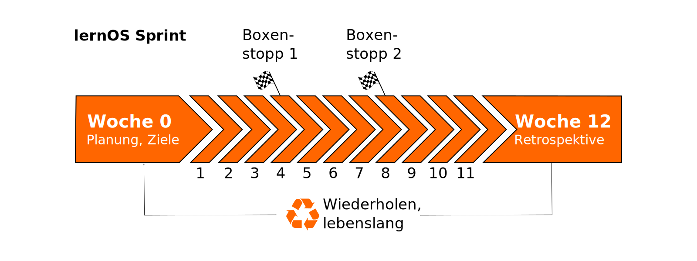

Lernen in Lerngruppen
Lernpfade in lernOS Leitfäden können alleine, zu zweit in Lerntandems oder mit 4-5 Personen in einer Lerngruppe (Learning Circle) durchlaufen werden. Insbesondere lernOS Neulingen (Noobs) empfehlen wir die Lerngruppe, idealerweise mit mindestens einer Person mit Erfahrung.
Die Lerngruppe durchläuft einen Lernpfad meist im Zeitraum von einem Quartal, den wir in lernOS in Anlehnung an Scrum auch Lern-Sprint nennen. Der Sprint startet in Woche 0 mit einer Planung. Die Wochen 1-11 werden von den Übungen (Katas) des genutzen Lernpfads gefüllt. In Woche 12 endet der Sprint mit einer Retrospektive und dem gemeinsamen Feiern des Erreichten.

Die Vorteile einer Lerngruppe:
- Du bist nicht alleine
- Alle können sich gegenseitig helfen - in einem "Circle of Trust"
- Alle können ihr eigenes Lernziel verfolgen
- Das Risiko des Abbruchs ist geringer (wie bei einer Sport-/Laufgruppe)
- Treffen sind persönlich, virtuell und hybrid möglich
Peer Learning Quickstarter
Von der Schule, der Ausbildung, der Hochschule und der Weiterbildung in Organisationen und Unternehmen sind wir gewohnt, dass andere uns Lerneinheiten (z.B. Schulungen, Seminare, E-Learnings) mit vorgegebenen Lernzielen und Lerninhalten vorgeben (fremdgesteuertes Lernen, auch instructor-led training). Das ist bequem, passt aber nicht immer zu den Anforderungen. Die ersten Schritte ins selbstgesteuerte Lernen fühlen sich sicher etwas ungewohnt an. Hier ein paar Tipps für den Einstieg:

Welche Lernziele hast du, die du durch fremdgesteuertes Lernen nicht oder nicht gut erreichst? Schreibe sie auf.
Welches der Lernziele willst du im nächsten Quartal erreichen? Wie viel Zeit kannst/willst du investieren? Gib dem Ziel die Priorität 1.
Gibt es zur Erreichung des Lernziels schon einen Lernpfad, z.B. in Form eines lernOS Leitfadens (s.u.) oder einer anderen offenen Lern-Ressource (Open Educational Ressource)?
Möchtest du alleine, im Lerntandem (zu zweit) oder in einem Learning Circle (mit 3-5 Personen) lernen? Hast du schon Mitlernende? Wenn nicht, nutze soziale Netzwerke wie Linkedin, Mastodon, Viva Engage & Co. oder Tools wie den Peerfinder, um eine Lerngruppe zu bilden
Tipp: wenn du gar nicht weißt, wo du anfangen sollst, suche dir 3-4 Mitlernende und startet einen Learning Circle mit einem der drei Lernpfade aus dem lernOS für Dich Leitfaden (Getting Things Done für stressfreie Produktivität, Objectives & Key Results für Zielorientierung & Fokussierung, Working Out Loud für offenes & vernetztes Lernen und Arbeiten).
Viel Erfolg - Keep Calm & Learn On - Lifelong!
Woche 0: Die Lerngruppe startet
Wie bei einer echten Reise ist die Planung vorab wichtig, damit die Reise gelingt. Eine kleine Checkliste als Hilfestellung für den gemeinsamen Start in Woche 0:
Agendavorschlag Woche 0:
- Check-in: Herzlich willkommen! (5 Minuten)
- Get together: Wer bist du? Stell Dich vor. Warum bist Du hier? Was ist Dein Lernziel? Fünf-Minuten-Timebox pro Person. (25 Minuten)
- Sprint Planung siehe unten (25 Minuten)
- Check-out: Das nächste Treffen bestätigen. (5 Minuten)
Festzulegen in Woche 0:
- Legt eine_n Koordinator_in für die Lerngruppe fest. Die Rolle kann fest sein oder ihr wechselt euch im Lauf der Lernreise ab.
- Legt den Lernpfad fest, den ihr gemeinsam durchlaufen wollt.
- Legt Tag und Uhrzeit für die wöchentlichen Treffen (lernOS Weekly's) fest. Plant alle 13 Termine im Kalender ein.
- Legt fest, ob ihr euch mit den Inhalten der wöchentlichen Übungen im Weekly beschäftigen wollt, oder ob sich jeder schon vorab damit beschäftigt und im Weekly Erfahrungen ausgetauscht und Hilfestellungen gegeben werden.
- Legt fest, ob ihr euch persönlich, virtuell oder hybrid treffen wollt.
- Legt fest, welche Tools ihr für die Kommunikation und die Dokumentation (z.B. lernOS Circle Template) in der Lerngruppe verwenden wollt. Stellt sicher, dass alle die Tools nutzen können und gut finden.
Woche 1-12: Checkliste für Circle Koordinator_innen
Beim Lernen in Gruppen hilft diese Checkliste dem/der Koordinator_in, die Weekly's strukturiert zu organisieren. Kopiert euch die Checkliste am besten an einen Ort, an dem alle Mitglieder der Lerngruppe Zugriff darauf haben (z.B. OneNote, Etherpad, OneDrive, Dropbox).
WOCHE 1
- Check-in: Was habe ich seit dem letzten Check-in getan? Was hat sich bei den Schlüsselergebnissen getan? Was hält mich auf? Zwei-Minuten-Timebox pro Circle-Mitglied. (10 Minuten)
- Durchsprache der Ergebnisse der Katas des jeweiligen Lernpfads
- Check-out: Was werde ich bis zum nächsten Weekly tun? Eine-Minute-Timebox pro Circle-Mitglied. (5 Minuten)
WOCHE 2
- Check-in: Was habe ich seit dem letzten Check-in getan? Was hat sich bei den Schlüsselergebnissen getan? Was hält mich auf? Zwei-Minuten-Timebox pro Circle-Mitglied. (10 Minuten)
- Durchsprache der Ergebnisse der Katas des jeweiligen Lernpfads
- Check-out: Was werde ich bis zum nächsten Weekly tun? Eine-Minute-Timebox pro Circle-Mitglied. (5 Minuten)
WOCHE 3
- Check-in: Was habe ich seit dem letzten Check-in getan? Was hat sich bei den Schlüsselergebnissen getan? Was hält mich auf? Zwei-Minuten-Timebox pro Circle-Mitglied. (10 Minuten)
- Durchsprache der Ergebnisse der Katas des jeweiligen Lernpfads
- Check-out: Was werde ich bis zum nächsten Weekly tun? Eine-Minute-Timebox pro Circle-Mitglied. (5 Minuten)
WOCHE 4 & Boxenstopp 1
- Check-in: Was habe ich seit dem letzten Check-in getan? Was hat sich bei den Schlüsselergebnissen getan? Was hält mich auf? Zwei-Minuten-Timebox pro Circle-Mitglied. (10 Minuten)
- Durchsprache der Ergebnisse der Katas des jeweiligen Lernpfads
- Check-out: Was werde ich bis zum nächsten Weekly tun? Eine-Minute-Timebox pro Circle-Mitglied. (5 Minuten)
WOCHE 5
- Check-in: Was habe ich seit dem letzten Check-in getan? Was hat sich bei den Schlüsselergebnissen getan? Was hält mich auf? Zwei-Minuten-Timebox pro Circle-Mitglied. (10 Minuten)
- Durchsprache der Ergebnisse der Katas des jeweiligen Lernpfads
- Check-out: Was werde ich bis zum nächsten Weekly tun? Eine-Minute-Timebox pro Circle-Mitglied. (5 Minuten)
WOCHE 6
- Check-in: Was habe ich seit dem letzten Check-in getan? Was hat sich bei den Schlüsselergebnissen getan? Was hält mich auf? Zwei-Minuten-Timebox pro Circle-Mitglied. (10 Minuten)
- Durchsprache der Ergebnisse der Katas des jeweiligen Lernpfads
- Check-out: Was werde ich bis zum nächsten Weekly tun? Eine-Minute-Timebox pro Circle-Mitglied. (5 Minuten)
WOCHE 7
- Check-in: Was habe ich seit dem letzten Check-in getan? Was hat sich bei den Schlüsselergebnissen getan? Was hält mich auf? Zwei-Minuten-Timebox pro Circle-Mitglied. (10 Minuten)
- Durchsprache der Ergebnisse der Katas des jeweiligen Lernpfads
- Check-out: Was werde ich bis zum nächsten Weekly tun? Eine-Minute-Timebox pro Circle-Mitglied. (5 Minuten)
WOCHE 8 & Boxenstopp 2
- Check-in: Was habe ich seit dem letzten Check-in getan? Was hat sich bei den Schlüsselergebnissen getan? Was hält mich auf? Zwei-Minuten-Timebox pro Circle-Mitglied. (10 Minuten)
- Durchsprache der Ergebnisse der Katas des jeweiligen Lernpfads
- Check-out: Was werde ich bis zum nächsten Weekly tun? Eine-Minute-Timebox pro Circle-Mitglied. (5 Minuten)
WOCHE 9
- Check-in: Was habe ich seit dem letzten Check-in getan? Was hat sich bei den Schlüsselergebnissen getan? Was hält mich auf? Zwei-Minuten-Timebox pro Circle-Mitglied. (10 Minuten)
- Durchsprache der Ergebnisse der Katas des jeweiligen Lernpfads
- Check-out: Was werde ich bis zum nächsten Weekly tun? Eine-Minute-Timebox pro Circle-Mitglied. (5 Minuten)
WOCHE 10
- Check-in: Was habe ich seit dem letzten Check-in getan? Was hat sich bei den Schlüsselergebnissen getan? Was hält mich auf? Zwei-Minuten-Timebox pro Circle-Mitglied. (10 Minuten)
- Durchsprache der Ergebnisse der Katas des jeweiligen Lernpfads
- Check-out: Was werde ich bis zum nächsten Weekly tun? Eine-Minute-Timebox pro Circle-Mitglied. (5 Minuten)
WOCHE 11
- Check-in: Was habe ich seit dem letzten Check-in getan? Was hat sich bei den Schlüsselergebnissen getan? Was hält mich auf? Zwei-Minuten-Timebox pro Circle-Mitglied. (10 Minuten)
- Durchsprache der Ergebnisse der Katas des jeweiligen Lernpfads
- Check-out: Was werde ich bis zum nächsten Weekly tun? Eine-Minute-Timebox pro Circle-Mitglied. (5 Minuten)
WOCHE 12: Retrospektive & Feier
In dieser Woche sollte die endgültige Iteration Deiner Key Results vorliegen. Sprecht darüber und zeigt Sie im Check-in. Ihr werdet über die Erfahrungen im Circle nachdenken und darüber sprechen, wie Ihr den Prozess aufrecht erhalten könnt. Nach dem Weekly solltet Ihr Euch etwas Zeit nehmen, um Euren Erfolg zu feiern!
- Check-in: Was habe ich seit dem letzten Check-in getan? Zeigt die finale Iteration der Key Results. Drei-Minuten-Timebox pro Circle-Mitglied. (15 Minuten)
- Your Learning Moments: Sprecht über die Momente im Sprint, die für euch besonders waren. Was sind eure "key learnings"? Überlegt, ob ihr diese als lernOS Story für alle anderen Praktiker veröffentlichen wollt. (20 minutes)
- After Action Review: Was war der Plan für den Sprint? Was ist passiert? Gab es eine Abweichung? Was kann man daraus lernen? (20 minutes)
- Check-out: Gibt es nächste Schritte? Bleibt ihr für einen weiteren Sprint zusammen?
- Party Time! (Die Dauer wählt ihr)